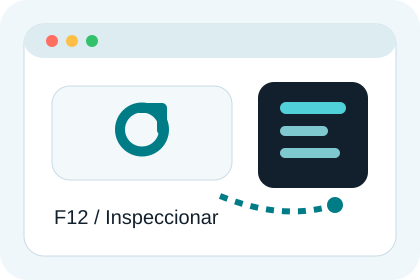
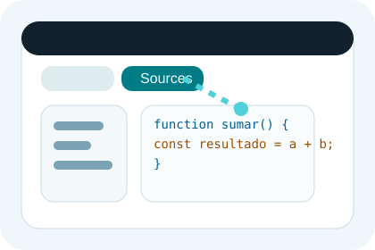
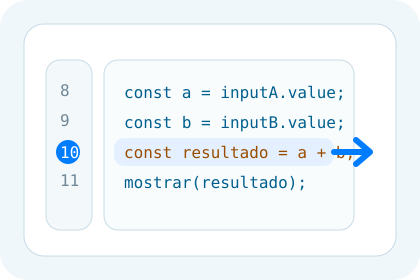
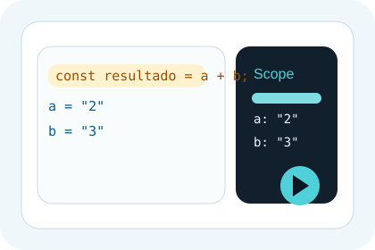
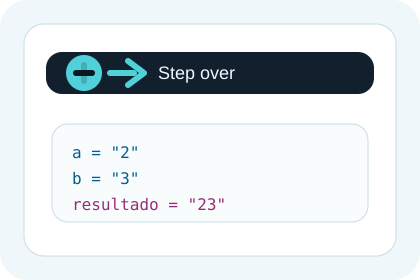
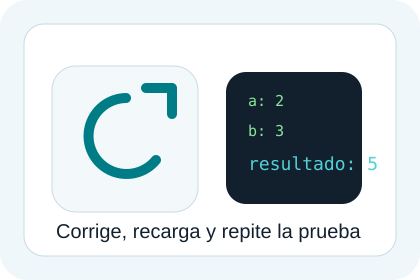

Codigo a depurar
function sumar() {
const a = document.querySelector('#numero-a').value;
const b = document.querySelector('#numero-b').value;
const resultado = a + b;
document.querySelector('#resultado').textContent = resultado;
}Tutorial visual en una sola pagina
Aqui tienes una guia simple para abrir DevTools, poner un breakpoint, avanzar linea a linea y comprobar por que una suma no da el resultado esperado.
Pasa el cursor o usa tab sobre cada termino tecnico para ver su significado.
Caso de ejemplo
Imagina que esperas obtener 5, pero el navegador muestra 23. Eso suele pasar cuando uno de los valores llega como texto y JavaScript concatena en vez de sumar.
function sumar() {
const a = document.querySelector('#numero-a').value;
const b = document.querySelector('#numero-b').value;
const resultado = a + b;
document.querySelector('#resultado').textContent = resultado;
}Mini demo interactiva
Escribe dos valores y pulsa primero el boton con error. Veras el mismo problema que luego depuras en Chrome. Despues pulsa el boton corregido para comparar el comportamiento.
Boton de apoyo al flujo de depuracion
Una pagina web no puede abrir Chrome DevTools por si sola. Este boton deja una traza preparada en la consola y te recuerda el atajo correcto: F12 o Ctrl + Mayus + J.
Resultado visible en pantalla: 23
Ahora mismo estas viendo el comportamiento con error: `2 + 3` produce `23` porque ambos valores son texto.
Antes de empezar
Idea clave: usa DevTools cuando necesites entender el comportamiento del codigo. Usa `console.log` solo como apoyo rapido, no como tecnica principal de diagnostico.
Recorrido guiado
Cada bloque indica que icono o control debes pulsar y que deberias observar en ese punto.
Pulsa F12 o haz clic derecho y elige Inspeccionar.

Veras un panel acoplado al navegador. Si nunca lo has usado, piensa en el como una mesa de diagnostico para inspeccionar HTML, CSS, red y JavaScript.
Objetivo: tener visible la interfaz de depuracion antes de reproducir el problema.
Haz clic en Sources para ver los archivos JavaScript cargados.

En el panel izquierdo localiza el archivo donde esta la funcion `sumar()`. Al abrirlo podras trabajar sobre el codigo real que esta ejecutando la pagina.
Objetivo: ir al punto exacto donde se calcula `resultado = a + b`.
Haz clic en el numero de linea donde aparece `const resultado = a + b;`.

Ese punto le dice al navegador: detente aqui antes de ejecutar esta linea. Asi puedes revisar el estado real de `a` y `b` justo antes de hacer la operacion.
Objetivo: congelar la ejecucion donde se produce el valor incorrecto.
Vuelve a la pagina, escribe `2` y `3`, y pulsa el boton de sumar.

La ejecucion se pausara automaticamente. En la parte derecha podras leer el valor actual de las variables en el bloque Scope.
Observa que `a` y `b` suelen aparecer como cadenas: `"2"` y `"3"`.
Pulsa el boton Step over next function call para ejecutar solo la linea actual.

Al avanzar veras que `resultado` pasa a valer `"23"`. Ya no estas suponiendo: lo has comprobado en tiempo real y en el punto exacto del fallo.
Diagnostico: la operacion esta concatenando texto, no sumando numeros.
Convierte ambos valores con `Number()` y recarga la pagina para repetir la prueba.

const a = Number(document.querySelector('#numero-a').value);
const b = Number(document.querySelector('#numero-b').value);
const resultado = a + b;Resultado esperado: ahora el depurador mostrara `5` y la interfaz tambien.
Resumen rapido
Abre o cierra Chrome DevTools.
Pon el breakpoint en la linea donde sospechas que el dato cambia o se calcula mal.
Lee valores y tipos en Scope antes de asumir que el error esta donde parece.
Usa Step over para comprobar el efecto exacto de cada linea sin llenar el codigo de trazas.
Despues del arreglo, repite la misma secuencia para validar que el problema desaparecio de verdad.